소음진동기사(구) (2021-05-15 기출문제)
1과목: 소음진동개론
1. 다음 1자유도 진동계의 운동방정식
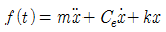
에서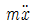
는 무엇을 나타내는가? (단, m 질량, Ce 감쇠계수, k 스프링정수, f(t) 외력의 가진함수이다.)- 스프링의 복원력
- 정적 수축량
- 점성 저향력
- 관성력
(정답률: 55%)

2. 아래 그림과 같은 진동계에서 각각의 고유진동수 계산식으로 옳은 것은? (단, S는 스프링 정수, M은 질량이다.)
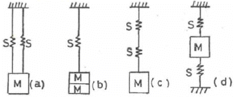
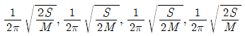
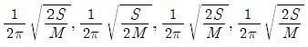
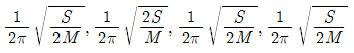
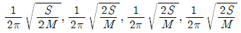
(정답률: 74%)
3. 다음 중 인체감각에 대한 주파수별 보정 값으로 틀린 것은? (단, 수평진동일 경우는 수평진동이 1~2Hz 기준)
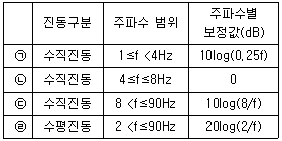
- ㉠
- ㉡
- ㉢
- ㉣
(정답률: 65%)
4. 기계의 소음을 측정하였더니 그림과 같이 비감쇠 정현 음파의 소음이 계측되었다. 기계 소음의 음압레벨(dB)은 약 얼마인가?
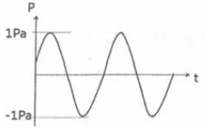
- 91
- 94
- 96
- 100
(정답률: 65%)
5. 소음에 대한 일반적인 인간의 (감수성)반응으로 가장 거리가 먼 것은?
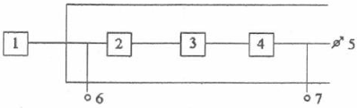
- 70대보다 20대가 민감한 편이다.
- 남성보다 여성이 민감한 편이다.
- 환자 또는 임산부보다는 건강한 사람이 받는 영향이 큰 편이다.
- 노동 상태보다는 휴식이나 잠잘 때 그 영향이 큰 편이다.
(정답률: 74%)
6. 다음 순음 중 우리 귀로 가장 예민하게 느낄 수 있는 청감으로 가장 적절한 것은?
- 100Hz 60dB 순음
- 500Hz 60dB 순음
- 1000Hz 60dB 순음
- 4000Hz 60dB 순음
(정답률: 59%)
7. 진동발생원의 진동을 측정한 결과, 가속도 진폭이 4×10-2m/s2이었다. 이것을 진동가속도레벨(VAL)로 나타내면 약 몇 dB인가?
- 69
- 72
- 76
- 79
(정답률: 58%)
8. 정현진동하는 경우 진동 속도의 진폭에 관한 설명으로 옳은 것은?
- 진동 속도의 진폭은 진동 주파수에 반비례한다.
- 진동 속도의 진폭은 진동 주파수에 비례한다.
- 진동 속도의 진폭은 진동 주파수의 제곱에 비례한다.
- 진동 속도의 진폭은 진동 주파수의 제곱에 반비례한다.
(정답률: 50%)
9. 투과손실 40dB인 콘크리트 벽 50m2와 투과손실 20dB인 유리창 10m2로 구성된 벽의 총합 투과손실(dB)은?
- 35
- 31
- 28
- 23
(정답률: 60%)
10. 소음의 영향으로 트린 것은?
- 소음이 순환계에 미치는 영향으로 맥박이 감소하고, 말초혈관이 확장되는 것이 있다.
- 노인성 난청은 6000Hz정도에서부터 시작된다.
- 소음에 폭로된 후 2일~3주 후에도 정상청력으로 회복되지 않으면 소음성 난청이라 부른다.
- 어느 정도 큰 소음을 들은 직후에 일시적으로 청력이 저하되었다가 수초~수일 후에 정상청력으로 돌아오는 현상을 TTS라고 한다.
(정답률: 70%)
11. 귀의 역할에 대한 설명으로 틀린 것은?
- 외이도는 일종의 공명기로서 소리를 증폭시켜 기저막을 진동시킨다.
- 음의 대소는 기저막의 섬모가 받는 자극의 크기에 따른다.
- 음의 고저는 기저막이 자극받는 섬모의 위치에 따라 결정된다.
- 중이(中耳)의 음의 전달매질은 고체이다.
(정답률: 50%)
12. 지반을 전파하는 파에 관한 설명으로 틀린 것은?
- 계측에 의한 지표진동은 주로 P파이다.
- P파와 S파는 역2승 법칙으로 거리감쇠한다.
- P파는 소밀파 또는 압력파라고도 한다.
- P파는 S파보다 전파속도가 빠르다.
(정답률: 70%)
13. 음의 크기에 관한 설명으로 틀린 것은?
- 음의 크기레벨은 phon으로 측정된다.
- 음의 크기레벨(LL)과 음의 크기(S)의 관계는 “LL=33.3logS+40”으로 정의된다.
- 1sone은 4000Hz 순음의 음세기레벨 40dB의 음의 크기로 정의된다.
- 음의 크기레벨은 감각적인 음의 크기를 나타내는 양으로 같은 음압레벨이라도 주파수가 다르면 같은 크기로 감각되지 않는다.
(정답률: 72%)
14. 소음통계레벨에 관한 설명으로 옳은 것은?
- 총 측정시간의 N(%)를 초과하는 소음레벨을 의미한다.
- 변동이 심한 소음평가방법으로 측정시간 동안의 변동 에너지를 시간적으로 평균하여 대수변환 시킨 것이다.
- 하루의 매 시간당 등가소음도 측정 후 야간에 매 시간 측정치에 벌칙레벨을 합산하여 파워평균한 값이다.
- 소음을 1/1옥타브밴드로 분석한 음압레벨을 NR차트에 plotting하여 그 중 가장 높은 NR곡서에 접하는 것을 판독한 값이다.
(정답률: 54%)
15. 53phon과 같은 크기를 갖는 음은 몇 sone인가?
- 0.65
- 0.94
- 1.52
- 2.46
(정답률: 59%)
16. 그림과 같이 진동하는 파의 감쇠특성으로 옳은 것은? (단, ζ는 감쇠비이다.)
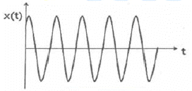
- ζ=0
- 0＜ζ＜1
- ζ=1
- ζ＞1
(정답률: 40%)
17. 자유음장에서 점음원으로부터 관측점까지의 거리를 2배로 하면 음압레벨은 어떻게 변화되는가?
- 1/2로 감소한다.
- 2배 증가한다.
- 3dB 감소한다.
- 6dB 감소한다.
(정답률: 70%)
18. 다음 설명 중 ( )안에 가장 적합한 것은?
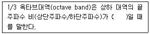
- 약 1.15
- 약 1.26
- 약 1.45
- 약 1.63
(정답률: 59%)
19. 소리를 감지하기까지의 귀(耳)의 구성요소별 전달경로(순서)로 옳은 것은?
- 이개 – 고막 – 기저막 - 이소골
- 이개 – 기저막 – 고막 - 이소골
- 이개 – 고막 – 이소골 - 기저막
- 이개 – 기저막 – 이소골 – 고막
(정답률: 72%)
20. 실내온도가 20℃, 가로×세로×높이가 5.7×7.8×5.2(m3)인 잔향실이 있다. 이 잔향실 내부에 아무것도 없는 상태에서 측정한 잔향시간이 9.5s이었다. 이 방에 3.1×3.7(m2)의 흡음재를 바닥에 설치한 후 잔향시간을 측정하니 2.7s이었다. 이 흡음재의 흡음률은?
- 0.55
- 0.69
- 0.78
- 0.88
(정답률: 29%)
2과목: 소음방지기술
21. 주파수 대역별 목표 소음레벨을 구하는 공식으로 옳은 것은? (단, n은 주파수 대역수이다.)
- 주파수 대역별 음압레벨 – 10logndB(A)
- 목표레벨(규제치) - 10logndB(A)
- 대상 음압레벨 – 10logndB(A)
- 음향파워레벨 – 10logndB(A)
(정답률: 10%)
22. 팬의 날개수가 5개이고 3600rpm으로 회전하고 있다면 이 팬이 작동할 때 기본음의 주파수 성분은 몇 Hz인가?
- 5
- 60
- 300
- 3600
(정답률: 54%)
23. 원형 흡음덕트의 흡음계수(K)가 0.29일 때, 직경 85cm, 길이 3.15m인 덕트에서의 감쇠량은 약 몇 dB인가? (단, 덕트 내 흡음재료의 두께는 무시한다.)
- 4.3
- 4.8
- 5.3
- 5.8
(정답률: 36%)
24. 바닥 20m×20m, 높이 4m 인 방의 잔향시간이 2초일 때, 이 방의 실정수는 약 몇 m2인가?
- 115.5
- 121.3
- 131.2
- 145.5
(정답률: 43%)
25. 밀도가 150kg/m3이고 두께가 5mm인 합판을 벽체로부터 50mm의 공기층을 두고 설치할 경우 판 진동에 의한 흡음 주파수는 약 몇 Hz인가? (단, 공기밀도는 1.2kg/m3, 기온은 20℃이다.)
- 309
- 336
- 374
- 394
(정답률: 17%)
26. 실내의 평균 흡음률을 구하는 방법으로 틀린 것은?
- 반확산음장법을 이용하여 구하는 방법
- 실내의 잔향시간을 측정하여 구하는 방법
- 재료별 면적과 흡음률을 계산하여 구하는 방법
- 음향파워레벨을 알고 있는 표준 음원을 이용하여 구하는 방법
(정답률: 38%)
27. 실정수가 126m2인 방에 음향파워레벨이 123dB인 음원이 있을 때 실내(확산음장)의 평균음압레벨은 몇 dB인가? (단, 음원은 전체 내면의 반사율이 아주 큰 잔향실 기준이다.)
- 92
- 97
- 100
- 108
(정답률: 50%)
28. 방음대책의 방법에서 전파경로 대책에 대한 설명으로 틀린 것은?
- 거리감쇠
- 저주파 음에 대해서는 지향성을 변환시킴
- 공장 벽체의 차음성 강화
- 공장건물의 내벽에 흡음처리
(정답률: 36%)
29. 방음벽 설치 시 유의점으로 가장 거리가 먼 것은?
- 음원의 지향성이 수음 측 방향으로 클 때에는 벽에 의한 감쇠치가 계산치보다 작게된다.
- 음원 측 벽면은 가급적 흡음처리하여 반사음을 방지한다.
- 점음원의 경우 벽의 길이가 높이의 5배 이상일 때에는 길이의 영향은 고려할 필요가 없다.
- 면음원인 경우에는 그 음원의 최상단에 점음원이 있는 것으로 간주하여 근사적인 회절감 쇠치를 구한다.
(정답률: 50%)
30. 다음 발파소음 감소대책으로 가장 거리가 먼 것은?
- 완전전색이 이루어져야 한다.
- 지발당 장약량을 감소시킨다.
- 기폭방법에서 역기폭보다 정기폭을 사용한다.
- 도폭선 사용을 피한다.
(정답률: 50%)
31. 기류음에 대한 방지대책으로 적절하지 않은 것은?
- 밸브의 다단화
- 분출 유속의 저감
- 표면 제진처리
- 관의 곡률 완화
(정답률: 50%)
32. 구멍직경 8mm, 구멍 간의 상하좌우 간격 20mm, 두께 10mm인 다공판을 45mm의 공기층을 두고 설치할 경우 공명주파수는 약 몇 Hz인가? (단, 음속은 340m/s이다.)
- 650
- 673
- 685
- 706
(정답률: 0%)
33. 음이 수직 입사할 때 이 벽체의 반사율은 0.45이었다. 이 때의 투과손실(TL)은 약 몇 dB인가? (단, 경계면에서 음이 흡수되지 않는다고 가정한다.)
- 1.5
- 2.0
- 2.6
- 3.5
(정답률: 50%)
34. 다음 중 옥외에 있는 소음원에 대한 소음방지 대책으로 가장 적절하지 않은 것은?
- 소음원과 수음지점 사이의 거리를 멀리한다.
- 음원에 방향성이 있는 경우에는 그 방향을 바꾼다.
- 수음지점 바로 주위에 몇 그루의 나무를 심어서 차폐한다.
- 음원에 방음커버를 설치한다.
(정답률: 60%)
35. 다음 중 흡음 덕트형 소음기에서 최대 감음 주파수의 범위로 가장 적합한 것은? (단, λ: 대상음 파장, D: 덕트 내경이다.)
- λ/4 ＜ D ＜ 2λ
- λ/2 ＜ D ＜ λ
- 2λ ＜ D ＜ 4λ
- 4λ ＜ D ＜ 8λ
(정답률: 58%)
36. 그림과 같은 방음벽에서 직접음의 회절 감쇠치가 12dB(A), 반사음의 회절 감쇠치가 15dB(A), 투과 손실치가 16dB(A)이다. 직접음과 반사음을 모두 고려한 이 방음벽의 회절 감쇠치는 약 몇 dB(A)인가?
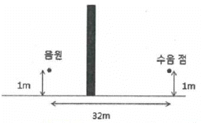
- 9.2
- 10.2
- 11.2
- 12.5
(정답률: 25%)
37. 정격 유속(rated flow)조건하에서 측정하는 것을 제외하고는 소음원에 소음기를 부착하기 전과 후의 공간상의 어떤 특정위치에서 측정한 음압레벨의 차와 그 측정위치로 정의되는 소음기의 성능표시는?
- 동적 삽입손실치
- 투과손실치
- 삽입손실치
- 감음량
(정답률: 39%)
38. 방음상자의 설계 시 검토해야할 사항과 거리가 먼 것은?
- 저감시키고자 하는 주파수의 파장을 고려하여 밀폐상자의 크기를 설계한다.
- 필요 시 차음 대책과 병행해서 방진 및 제진대책을 세워야 한다.
- 밀폐상자 내의 온도 상승을 억제하기 위해 환기설비를 한다.
- 환기용 팬 주위는 환기 효율에 영향을 주므로 소음기 등을 설치하면 안 된다.
(정답률: 36%)
39. 목(neck)과 공동(cavity)으로 구성된 헬름홀츠(Helmholtz) 공명기를 진동계의 스프링-질량-댐퍼 시스템과 등가시켰을 때, 질량과 관련 있는 인자로 옳게 나타낸 것은? (단, 목의 음향저항은 무시하며, 목 단면적: S, 목의 길이: L, 목의 유효길이: Le, 공동의 단면적: A, 공동의 높이: H, 공기의 밀도: ρ이다.)
- ρ, L, S
- ρ, A, H
- ρ, (L + H), S
- ρ, (L + Le), S
(정답률: 54%)
40. 면적 S1, S2에서 투과율이 각각 γ1, γ2의 2부분으로 되어 있는 벽의 총합투과손실(TL)을 아래와 같이 나타낼 때, 투과손실 20dB의 창 10m2와 투과손실 30dB의 벽부분 100m2인 벽의 총투과 손실은 약 몇 dB인가?
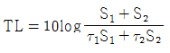
- 25
- 27
- 29
- 31
(정답률: 47%)
3과목: 소음진동 공정시험 기준
41. 도로교통소음한도 측정방법에서 디지털 소음자동분석계를 사용할 경우 측정자료 분석방법으로 옳은 것은?
- 샘플주기를 0.1초 이내에서 결정하고 1분 이상 측정하여 자동 연산ㆍ기록한 등가소음도를 그 지점의 측정소음도로 한다.
- 샘플주기를 0.1초 이내에서 결정하고 5분 이상 측정하여 자동 연산ㆍ기록한 등가소음도를 그 지점의 측정소음도로 한다.
- 샘플주기를 1초 이내에서 결정하고 1분 이상 측정하여 자동 연산ㆍ기록한 등가소음도를 그 지점의 측정소음도로 한다.
- 샘플주기를 1초 이내에서 결정하고 10분 이상 측정하여 자동 연산ㆍ기록한 등가소음도를 그 지점의 측정 소음도로 한다.
(정답률: 59%)
42. 진동 측정기기 중 지시계기의 눈금오차는 얼마 이내이어야 하는가?
- 0.5dB 이내
- 1dB 이내
- 5dB 이내
- 10dB 이내
(정답률: 63%)
43. 소음ㆍ진동공정시험기준상 공장소음 측정자료 평가표 서식의 측정기기란에 기재되어야 할 항목으로 거리가 먼 것은?
- 소음계 교정일자
- 소음도기록기명
- 부속장치
- 소음계명
(정답률: 47%)
44. 철도소음관리기준 측정 시 측정자료의 분석에 관한 설명이다. ( )안에 들어갈 내용으로 옳은 것은?
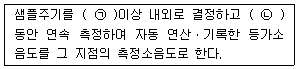
- ㉠ 1초, ㉡ 10초
- ㉠ 0.1초 ㉡ 1시간
- ㉠ 1초 ㉡ 1시간
- ㉠ 0.1초 ㉡ 10분
(정답률: 72%)
45. 다음 중 진동레벨계의 구조별 성능기준으로 가장 거리가 먼 것은?
- calibration network calibrator는 진동측정기의 감도를 점검 및 교정하는 장치로서 자체에 내장되어 있거나 분리되어 있어야 한다.
- pick-up은 지면에 설치할 수 있는 구조로서 진동신호를 전기신호로 바꾸어 주는 장치를 말하며, 레벨의 간격이 10dB 간격으로 표시되어야 한다.
- weighting networks는 인체의 수진감각을 주파수 보정특성에 따라 나타내는 것으로 V특성(수직특성)을 갖춘 것이어야 한다.
- amplifier는 진동픽업에 의해 변환된 전기신호를 증폭시키는 장치를 말한다.
(정답률: 39%)
46. 규제기준 중 발파소음 측정방법에 대한 설명으로 틀린 것은?
- 소음도 기록기를 사용할 때에는 기록지상의 지시치의 최고치를 측정소음도로 한다.
- 최고소음 고정(hold)용 소음계를 사용할 때에는 당해 지시치를 측정소음도로 한다.
- 디지털 소음자동분석계를 사용할 때에는 샘플주기를 1초 이하로 놓고 발파소음의 발생시간 동안 측정하여 자동 연산ㆍ기록한 최고치를 측정소음도로 한다.
- 소음계의 레벨레인지 변환기는 측정소음도의 크기에 부응할 수 있도록 고정시켜야 한다.
(정답률: 43%)
47. 소음의 환경기준 측정방법 중 도로변지역의 범위(기준)로 옳은 것은?
- 2차선인 경우 도로단으로부터 30m 이내의 지역
- 4차선인 경우 도로단으로부터 100m 이내의 지역
- 자동차전용도로의 경우 도로단으로부터 100m 이내의 지역
- 고속도로의 경우 도로단으로부터 150m 이내의 지역
(정답률: 63%)
48. 등가소음도에 대한 설명으로 옳은 것은?
- 환경오염 공정시험기준의 측정방법으로 측정한 소음도를 말한다.
- 측정소음도에 배경소음을 보정한 후 얻어진 소음도를 말한다.
- 임의의 측정시간 동안 발생한 변동소음의 총 에너지를 같은 시간 내의 정상소음의 에너지로 등가하여 얻어진 소음도를 말한다.
- 대상소음도에 충격음, 관련시간대에 대한 측정소음 발생시간의 백분율, 시간별, 지역별 등의 보정치를 보정한 후 얻어진 소음도를 말한다.
(정답률: 54%)
49. 소음계의 레벨레인지 변환기에 관한 설명으로 가장 거리가 먼 것은?
- 측정하고자 하는 소음도가 지시계기의 범위 내에 있도록 하기 우한 감쇠기이다.
- 지향성이 작은 압력형으로 하며, 기기의 본체와 분리가 가능하여야 한다.
- 레벨 변환 없이 측정이 가능한 경우 레벨레인지 변환기가 없어도 된다.
- 유효눈금범위가 30dB 이하가 되는 구조의 것은 변환기에 의한 레벨의 간격이 10dB간격으로 표시되어야 한다.
(정답률: 69%)
50. 마이크로폰을 소음계와 분리시켜 소음을 측정할 때 마이크로폰의 지지장치로 사용하거나 소음계를 고정할 때 사용하는 장치는?
- tripod
- meter
- fast-slow switch
- calibration network calibrator
(정답률: 58%)
51. 청감보정회로 및 주파수분석기에 관한 설명으로 옳지 않은 것은?
- 청감보정회로에서 어떤 특정소음을 A 및 C 특성으로 측정한 결과, 측정치가 거의 같다면 그 소음에는 저주파음이 거의 포함되어 있지 않다고 볼 수 있다.
- 청감보정회로에서 A특성 측정치는 D 특성 측정치보다 항상 높은 값은 나타낸다.
- 주파수분석기에서 대역필터가 직렬로 된 것은 일정소음외에는 분석하기 어려운 단점이 있다.
- 주파수분석기에서 대역필터가 병렬로 된 것을 사용할 경우에는 모든 대역의 음압레벨을 동시에, 즉 실시간 분석할 수 있다.
(정답률: 54%)
52. 소음계 중 교정장치에 관한 설명이다. ( )에 알맞은 것은?
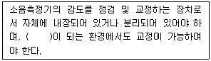
- 50dB(A) 이상
- 60dB(A) 이상
- 70dB(A) 이상
- 80dB(A) 이상
(정답률: 56%)
53. 발파진동 평가를 위한 보정 시 시간대별 보정발파횟수(N)는 작업일지 등을 참조하여 발파진동 측정당일의 발파진동 중 진동레벨이 얼마 이상인 횟수(N)를 말하는가?
- 50dB(V) 이상
- 55dB(V) 이상
- 60dB(V) 이상
- 130dB(V) 이상
(정답률: 54%)
54. 배출허용기준 중 진동측정을 위한 측정조건으로 틀린 것은?
- 진동픽업츤 수직면을 충분히 확보할 수 있고, 외부환경 영향에 민감한 고에 설치한다.
- 진동픽업은 수직방향 진동레벨을 측정할 수 있도록 설치한다.
- 진동픽업의 설치장소는 옥외지표를 원칙으로 한다.
- 진동픽업의 설치장소는 완충물이 없는 장소로 한다.
(정답률: 70%)
55. 환경기준 중 소음측정방법으로 옳지 않은 것은?
- 소음도 기록기가 없는 경우에는 소음계만으로 측정할 수 있으나, 통상 소음계와 소음도 기록기를 연결하여 측정ㆍ기록하는 것을 원칙으로 한다.
- 소음계의 레벨레인지 변환기는 측정지점의 소음도를 예비조사한 후 적절하게 고정시켜야 한다.
- 옥외측정을 원칙으로 하며, 측정점 선정 시에는 당해지역 소음평가에 현저한 영향을 미칠 것으로 예상되는 공장 및 사업장, 철도 등의 부지 내는 피해야 한다.
- 일반지역의 경우에는 가능한 한 측정점 반경 10m 이내에 장애물(담, 건물, 기타 반사성 구조물 등)이 없는 지점의 지면 위 3~5m로 한다.
(정답률: 59%)
56. 환경기준 중 소음측정방법에 있어 낮 시간대에는 각 측정지점에서 2시간 이상 간격으로 몇 회 이상 측정하여 산술평균한 값을 측정소음도로 하는가?
- 2회 이상
- 3회 이상
- 4회 이상
- 5회 이상
(정답률: 50%)
57. 배출허용기준 중 소음측정방법으로 옳지 않은 것은?
- 공장의 부지경계선에 비하여 피해가 예상되는 자의 부지경계선에서의 소음도가 더 큰 경우에는 피해가 예상되는 자의 부지경계선을 측정점으로 한다.
- 측정지점에 높이가 1.5m를 초과하는 장애물이 있는 경우에는 장애물로부터 소음원 방향으로 1.0~3.5m 떨어진 지점으로 한다.
- 측정소음도의 측정은 대상 배출시설의 소음발생기기를 가능한 한 최대출력으로 가동시킨 정상상태에서 측정하여야 한다.
- 피해가 예상되는 적절한 측정시각에 측정지점수 1지점을 선정ㆍ측정하여 측정소음도로 한다.
(정답률: 47%)
58. 다음 진동레벨계 기본구조에서 “6”은 무엇인가?
- 진동픽업
- 교정장치
- 지시계기
- 증폭기
(정답률: 54%)
59. 철도소음의 소음관리기준에서 측정방법에 관한 설명으로 가장 거리가 먼 것은?
- 소음계의 동특성은 빠름(fast)으로 하여 측정한다.
- 기상조건, 열차운행횟수 및 속도 등을 고려하여 당해지역의 1시간 평균 철도 통행량이상인 시간대를 포함하여 야간 시간대는 1회 1시간 동안 측정한다.
- 철도소음관리기준을 적용하기 위하여 측정하고자 할 경웨는 철도보호지구지역 내에서 측정ㆍ평가한다.
- 측정자료 분석 시 1일 열차통행량이 30대 미만인 경우에는 측정소음도를 보정한 후 그 값을 측정소음도로 한다.
(정답률: 50%)
60. 규제기준 중 생활진동 측정방법으로 옳지 않은 것은?
- 피해가 예상되는 적절한 측정시간에 2지점 이상의 측정지점수를 선정ㆍ측정하여 산술평균한 진동레벨을 측정진동레벨로 한다.
- 측정점은 피해가 예상되는 자의 부지경계선 중 진동레벨이 높을 것으로 예상되는 지점을 택하여야 하며 배경진동의 측정점은 동일한 장소에서 측정함을 원칙으로 한다.
- 측정진동레벨은 대상 진동발생원의 일상적인 사용상태에서 정상적으로 가동시켜 측정하여야 한다.
- 배경진동레벨은 대상진동원의 가동을 중지한 상태에서 측정하여야 하나, 가동중지가 어렵다고 인정되는 경우에는 배경진동의 측정 없이 측정진동레벨을 대상진동레벨로 할 수 있다.
(정답률: 60%)
4과목: 진동방지기술
61. 공해진동의 범위에서 인체의 진동에 대한 감각도를 나타낸 등감각곡선에서 수직진동을 가장 잘 느끼는 주파수의 범위는?
- 1~4Hz
- 4~8Hz
- 8~12Hz
- 8~90Hz
(정답률: 50%)
62. 공기 스프링의 특징에 대한 설명으로 옳은 것은?
- 부대시설이 필요 없으며 공기누출의 위험이 없다.
- 공기 스프링은 지지하중의 크기가 변화할 경우에도 높이 조정밸브로 기계 높이를 일정하게 유지할 수 있다.
- 사용진폭이 적은 것이 많아 별도의 댐퍼가 필요치 않다.
- 하중의 변화에 따른 고유진동수의 변화가 커 부하 능력범위가 적다.
(정답률: 63%)
63. 다음 그림과 같은 계에서 X1=3cos4t 일 때 X의 정상상태 진폭이 2였다. 스프링 상수 K 값은?
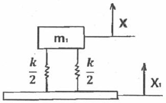
- 6.40m1
- 10.12m1
- 10.67m1
- 24.00m1
(정답률: 22%)
64. 방진대책은 발생원, 전파경로, 수진측 대책으로 분류된다. 모터 구동 세탁기에는 일반적으로 수평조절용 장치가 하부에 설치되어 있다. 이는 무슨 대책에 해당하는가?
- 발생원
- 전파경로
- 수진측
- 해당안됨
(정답률: 37%)
65. 매분 600회전으로 돌고 있는 차축의 정적 불균형력은 그림에서 반경 0.1m의 원주상을 1kg의 질량이 회전하고 있는 것에 상당한다고 할 때 등가가진력의 최대치는 약 몇 N인가?
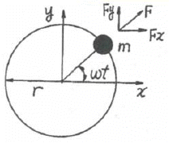
- 100
- 200
- 400
- 600
(정답률: 44%)
66. 다음은 자동차 방진에 관한 용어 설명이다. ( )안에 가장 적합한 것은?
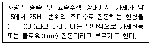
- 와인드업(wind up)
- 프론트엔드진동(front end vibration)
- 브레이크 져더(brake judder)
- 셰이크(shake)
(정답률: 60%)
67. 방진대책을 발생원, 전파경로, 수진측 대책으로 분류할 때 다음 중 발생원 대책과 거리가 먼 것은?
- 가진력을 감쇠시킨다.
- 기초중량을 부가 또는 경감시킨다.
- 동적 흡진한다.
- 수진점 근방에 방진구를 설치한다.
(정답률: 50%)
68. 기계에서 발생하는 불평형력은 회전 및 왕복운동에 의한 관성력, 모멘트에 의해 발생한다. 회전운도에 의해서 발생되는 원심력 F의 공식으로 옳은 것은? (단, 불평형 질량은 m, 불평형 질량의 운동반경은 γ, 각진동수는 ω이다.)
- F=mγ2ω
- F=mγω
- F=m2γω
- F=mγω2
(정답률: 54%)
69. 진동의 원인이 되는 가진력 중 주로 질량불평형에 의한 가진력으로 진동이 발생하는 것은?
- 파쇄기
- 송풍기
- 프레스
- 단조기
(정답률: 50%)
70. 특성 임피던스가 32×106kg/m2ㆍs인 금속관 플랜지의 접속부에 특성 임피던스가 3×104kg/m2ㆍs인 고무를 넣어 진동 절연할 때 진동감쇠량은 약 몇 dB인가?
- 21
- 24
- 27
- 30
(정답률: 25%)
71. 진동절연의 문제에서 전달률을 사용하는데 여기서 말하는 전달률을 바르게 표시한 것은? (단, ω: 가진력의 각진동수, ωn: 계의 고유각진동수이다.)
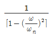
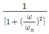
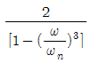
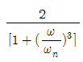
(정답률: 60%)
72. 기계를 스프링으로 지지하여 고체음을 저하시켜 소음을 줄이고자 한다. 강제진동수가 40Hz인 경우 스프링의 정적 수축량은 약 몇 cm인가? (단, 감쇠비는 0이고, 진동전달률은 0.3이다.)
- 0.046
- 0.067
- 0.107
- 0.137
(정답률: 39%)
73. 외부에서 가해지는 강제진동수를 f, 계의 고유진동수를 fn이라 할 때 전달력이 외력보다 항상 큰 경우는?
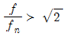
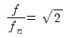
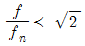
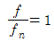
(정답률: 47%)
74. 전기모터가 기계장치를 구동시키고 계는 고무깔개 위에 설치되어 있으며, 고무깔개는 0.4cm의 정적처짐을 나타내고 있다. 고무깔개의 감쇠비(ζ)는 0.22, 진동수비(η)는 3.3이라면 기초에 대한 힘의 전달률은?
- 0.11
- 0.14
- 0.18
- 0.24
(정답률: 31%)
75. 서징(surging)에 관한 설명으로 옳은 것은?
- 코일스프링을 사용한 탄성지지계에서는 스프링의 서징과 공진시의 감쇠 증대가 문제된다.
- 서징이라는 것은 코일스프링 자신의 탄성진동의 고유 진동수가 외력의 진동수와 공진하는 상태이다.
- 서징은 방진고무에서 주로 많이 대두된다.
- 코일스프링이 서징을 일으키면 탄성지지계의 진동전달률이 현저히 저하한다.
(정답률: 37%)
76.
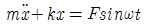
의 운동방정식을 만족시키는 진동이 일어나고 있을 때 고유 각진동수는?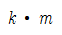
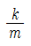
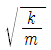
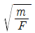
(정답률: 50%)
77. 4개의 같은 스프링으로 탄성 지지한 기계에서 스프링을 빼낸 후 8개의 지점에 균등하게 탄성 지지하여 고유진동수를 1/2로 낮추고자 할 때 1개의 스프링 정수는 어떻게 변화되어야 하는가?
- 원래의 1/8
- 원래의 1/16
- 원래의 1/32
- 원래의 1/64
(정답률: 17%)
78. 방진에 사용하는 금속 스프링의 장점이 아닌 것은?
- 온도, 부식과 같은 환경요소에 대한 저항성이 크다.
- 저주파 차진에 좋다.
- 최대 변위가 허용된다.
- 감쇠율이 높고 공진 전달률이 낮다.
(정답률: 42%)
79. 무게 500N인 기계를 4개의 스프링으로 탄성 지지한 결과 스프링의 정적수축량이 2.5cm였다. 이 스프링의 스프링 정수는 몇 N/mm인가?
- 5
- 10
- 50
- 200
(정답률: 34%)
80. 임계감쇠(critically damped)란 감쇠비(ζ)가 어떤 값을 가질 때인가?
- ζ=1
- ζ＞1
- ζ＜1
- ζ=0
(정답률: 54%)
5과목: 소음진동 관계 법규
81. 소음ㆍ진동관리법령상 규제기준을 초과하여 생활소음ㆍ진동을 발생시킨 사업자에게 작업시간의 조정 등을 명령 하였으나, 이를 위반한 경우 벌칙기준으로 옳은 것은?
- 3년 이하의 징역 또는 1천 500만원 이하의 벌금에 처한다.
- 1년 이하의 징역 또는 1천만원 이하의 벌금에 처한다.
- 6개월 이하의 징역 또는 500만원 이하의 벌금에 처한다.
- 300만원 이하의 과태료를 부과한다.
(정답률: 36%)
82. 소음ㆍ진동관리법령상 공사장 방음시설 설치 기준으로 틀린 것은?
- 방음벽시설 전후의 소음도 차이(삽입손실)는 최소 7dB 이상 되어야 하며, 높이는 3m 이상 되어야 한다.
- 공사장 인접지역에 고층건물 등이 위치하고 있어, 방음벽시설로 인한 음의 반사피해가 우려되는 경우에는 흡으형 방음벽시설을 설치하여야 한다.
- 삽입손실 측정을 위한 측정지점(음원 위치, 수음자 위치)은 음원으로부터 3m 이상 떨어진 노면 위 1.0m 지점으로 하고, 방음벽시설로부터 2m 이상 떨어져야 한다.
- 방음벽시설의 기초부와 방음판ㆍ기둥 사이에 틈새가 없도록 하여 음의 누출을 방지하여야 한다.
(정답률: 54%)
83. 소음ㆍ진동관리법령상 교통소음 관리기준 중 농림지역의 도로교통소음한도기준(LeqdB(A))으로 옳은 것은? (단, 주간(06:00~22:00)기준이다.)
- 58
- 60
- 63
- 73
(정답률: 36%)
84. 소음ㆍ진동관리법령상 시장ㆍ군수ㆍ구청장이 배출시설 및 방지시설의 가동상태를 점검하기 위하여 소음ㆍ진동검사를 의뢰할 수 있는 기관이 아닌 것은?
- 환경보전협회
- 한국환경공단
- 국립환경과학원
- 특별시ㆍ광역시ㆍ도의 보건환경연구원
(정답률: 54%)
85. 환경정책기본법령상 도로변지역 밤시간대의 소음환경기준(Leq dB(A))으로 옳은 것은? (단, 적용대상지역은 주거지역 중 전용주거지역이며, 시간은 법령기준에 의한 밤시간대로 한다.)
- 40
- 45
- 50
- 55
(정답률: 39%)
86. 소음ㆍ진동관리법령상 운행차 정기검사의 방법ㆍ기준 및 대상항목 중 소음도 측정기준에 관한 사항으로 옳지 않은 것은?
- 소음측정은 자동기록장치를 사용하는 것을 원칙으로 하고 배기소음의 경우 4회 이상 실시하여 측정치의 차이가 5dB을 초과하는 경우에는 측정치를 무효로 하고 다시 측정한다.
- 측정 항목별로 소음측정기 지시치(자동기록장치를 사용한 경우에는 자동기록장치의 기록치)의 최대치를 측정치로 하며, 암소음은 지시치의 평균치로 한다.
- 암소음 측정은 각 측정 항목별로 측정 직전 또는 직후에 연속하여 10초 동안 실시하며, 순간적인 충격음 등은 암소음으로 취급하지 않는다.
- 자동차송므과 암소음의 측정치의 차이가 3dB이상 10dB 미만인 경우에는 자동차로 인한 소음의 측정치로부터 보정치를 뺀 값을 최종 측저치로 하고, 그 차이가 3dB 미만일 때에는 측정치를 무효로 한다.
(정답률: 40%)
87. 소음ㆍ진동관리법령상 전기를 주동력으로 사용하는 자동차에 대한 종류는 무엇에 의해 구분하는가?
- 마력수
- 차량총중량
- 소모전기량(V)
- 엔진배기량
(정답률: 54%)
88. 소음ㆍ진동관리법령상 환경기술인 환경부장관이 교육을 실시할 능력이 있다고 인정하여 지정하는 기관 등에서 받아야 하는 교육의 기간 기준은 3년마다 한 차례 이상 며칠 이내인가? (단, 정보통신매체를 이용한 원격교육은 제외한다.)
- 3일
- 5일
- 7일
- 14일
(정답률: 50%)
89. 소음ㆍ진동관리법령상 자동차 종류 범위기준에 관한 설명으로 옳지 않은 것은? (단, 2015년 12월 8일 이후 제작되는 자동차 기준이다.)
- 이륜자동차는 자전거로부터 진화한 구조로서 사람 또는 소량의 화물을 운송하기 위한 것이며, 엔진배기량이 50cc 이상이고, 차량총중량이 1천킬로그램을 초과하지 않는다.
- 이륜자동차는 운반차를 붙인 이륜자동차와 이륜자동차에서 파생된 삼륜 이상의 최고속도 50km/h를 초과하는 이륜자동차를 포함한다.
- 경자동차의 엔진배기량은 1000cc 미만이다.
- 승용차에는 지프(JEEP), 왜건(WAGON), 밴(VAN) 및 승합차를 포함한다.
(정답률: 50%)
90. 다음은 소음ㆍ진동관리법령상 항공기 소음의 관리에 관한 사항이다. ( )안에 알맞은 것은?
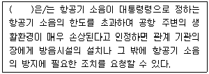
- 지방환경청장
- 특별시장
- 환경부장관
- 시ㆍ도지사
(정답률: 47%)
91. 소음ㆍ진동관리법령상 운행자동차 중 경자동차의 배기소음허용기준은? (단, 2006년 1월 1일 이후에 제작되는 자동차이다.)
- 100dB(A) 이하
- 1⑤dB(A) 이하
- 110dB(A) 이하
- 112dB(A) 이하
(정답률: 47%)
92. 다음은 소음ㆍ진동관리법령상 환경기술인을 두어야 할 사업장 및 그 자격기준이다. ( )안에 알맞은 것은?
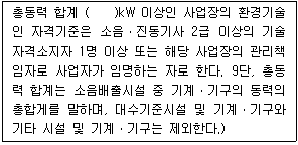
- 1250
- 2250
- 3500
- 3750
(정답률: 62%)
93. 소음ㆍ진동관리법령상 소음배출시설 기준으로 옳지 않은 것은? (단, 동력기준시설과 대수기준시설을 제외한 그 밖의 시설 및 기계ㆍ기구 기준이다.)
- 낙하해머의 무게가 0.3톤 이상의 단조기
- 120kW 이상의 발전기(수력발전기는 제외)
- 3.75kW 이상의 연삭기 2대 이상
- 석재 절단기(동력을 사용하는 것은 7.5kW 이상으로 한정)
(정답률: 10%)
94. 소음ㆍ진동관리법령상 배출시설과 방지시설을 정상적으로 운영ㆍ관리하기 위한 환경기술인을 임명하지 아니한 자에 대한 벌칙(또는 과태료)기준으로 옳은 것은?
- 200만원 이하의 과태료
- 300만원 이하의 과태료
- 6개월 이하의 징역 또는 500만원 이하의 벌금
- 1년 이하의 징역 또는 1천만원 이하의 벌금
(정답률: 54%)
95. 소음ㆍ진동관리법령상 시ㆍ도지사가 매년 환경부장관에게 제출하는 소음ㆍ진동 관리시책의 추진상황에 관한 연차 보고서에 포함되어야 하는 내용으로 가장 거리가 먼 것은?
- 소음ㆍ진동 발생원 및 소음ㆍ진동 현황
- 소음ㆍ진동 저감대책 추진실적 및 추진계획
- 소음ㆍ진동 발생원에 대한 행정처분 및 지원실적
- 소요 재원의 확보계획
(정답률: 50%)
96. 소음ㆍ진동관리법령상 시장ㆍ군수 등이 환경부령으로 정하는 바에 따라 자동차 소유자에게 운행차 개선명령을 하려는 경우, 그 기간기준에 관한 사항이다. ( )안에 알맞은 것은?
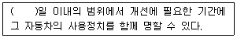
- 10
- 15
- 30
- 60
(정답률: 46%)
97. 소음ㆍ진동관리법령상 생활소음ㆍ진동이 발생하는 공사로서 “환경부령으로 정하는 특정공사”는 특정공사의 사전신고 대상 기계ㆍ장비의 사용기간 기준이 얼마인 공사인가? (단, 예외사항은 제외한다.)
- 3일 이상
- 5일 이상
- 7일 이상
- 10일 이상
(정답률: 17%)
98. 소음ㆍ진동관리법령상 공장소음 배출허용기준에 관한 설명으로 틀린 것은?
- 저녁시간대는 18:00~24:00이다.
- 충격음 성분이 있는 경우 허용 기준치에 –10dB을 보정한다.
- 도시지역 중 전용주거지역의 낮 배출허용기준은 50dB(A) 이하이다.
- 관련시간대(낮은 8시간, 저녁은 4시간, 밤은 2시간)에 대한 측정소음발생시간의 백분율이 25%이상 50%미만인 경우 +5dB을 허용 기준치에 보정한다.
(정답률: 47%)
99. 소음ㆍ진동관리법령상 위반사항에 대한 행정처분기준으로 틀린 것은? (단, 예외사항은 제외한다.)
- 방지시설을 설치하지 아니하고 배출시설을 가동한 경우의 1차 행정처분기준은 “조업정지”이다.
- 배출시설 설치 신고를 하지 아니하고 배출시설을 설치한 경우의 1차 행정처분기준은 “사용중지명령”이다. (단, 해당지역이 배출시설의 설치가 가능한 지역이다.)
- 배출시설 설치신고를 한 자가 환경부령으로 정하는 중요사항에 대한 배출시설변경 신고를 이행하지 아니한 경우 1차 행정처분기준은 “조업정지 5일”이다.
- 환경기술인을 임명하지 아니한 경우의 2차 행정처분기준은 “경고”이다.
(정답률: 31%)
100. 소음ㆍ진동관리법령상 생활소음ㆍ진동이 발생하는 공사로서 환경부령으로 정하는 특정공사를 시행하고자 하는 사업자가 해당공사 시행 전까지 시장ㆍ군수ㆍ구청장 등에게 제출하는 특정공사 사전신고서에 첨부되어야 하는 서류로 틀린 것은?
- 방음ㆍ방진시설의 설치명세 및 도면
- 특정공사의 개요(공사목적과 공사일정표 포함)
- 공사장 위치도(공사장의 주변 주택 등 피해 대상 표시)
- 피해예상지역 주민동의서
(정답률: 46%)